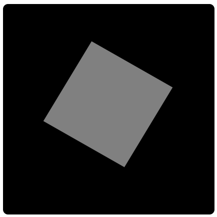
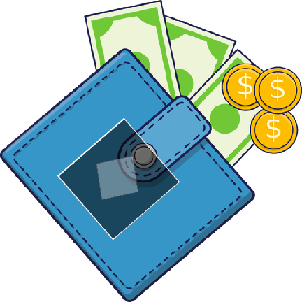
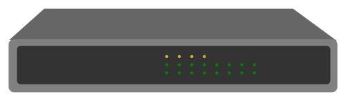
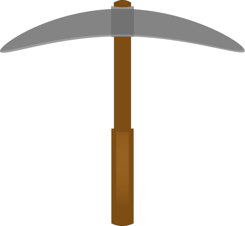

About BoskaCoin

BoskaCoin is a cryptocurrency forked from LebowskisCoin. It uses the Scrypt algorithm.
The base block reward is 20 BOSKA, but rewards can randomly increase depending on luck. Possible rewards include:
- 20 BOSKA
- 200 BOSKA
- 500 BOSKA
- 2500 BOSKA
- 10000 BOSKA
Higher rewards have lower probability. Transaction fees included in the block are also added to the reward.
Blocks are generated approximately every minute when the network is active.
Wallet

You can download the BoskaCoin wallet from the official GitHub releases page.
The wallet is available for Windows. Linux users can compile the wallet from source.
Always download the wallet from the official repository to ensure authenticity.
Connect to the Network

To connect your wallet to the BoskaCoin network, you can use the following seed nodes:
- pyrrhocorisapterus.org:8035 — Seed node maintained by Imusing
- cavesystem.net:8035 — Seed node maintained by Novixx
- seed.boskacoin.org:8035 — Seed hosted by BoskaCoin.org
Mining Example
You can mine BoskaCoin using any Scrypt compatible miner.
cgminer -o stratum+tcp://pool.boskacoin.org:3333 -u YOUR_WALLET_ADDRESS -p x
Mining Pools

Below is a list of pools that support BoskaCoin mining. This list is provided for convenience. The BoskaCoin project does not control or operate these pools unless explicitly stated.
- zalmex.online — Fee: 0.01%
- Coin-Miners Pool — Fee: 1% shared mining, 1.5% solo mining
- Lucky Dog Pool — Fee: 1% shared mining, 1% solo mining
- pool.boskacoin.org — Official pool, currently in early testing phase. Fee: 0.1%
- miningcoin.online — YAAMP based open source mining pool. Fee: 0.01% shared and solo mining